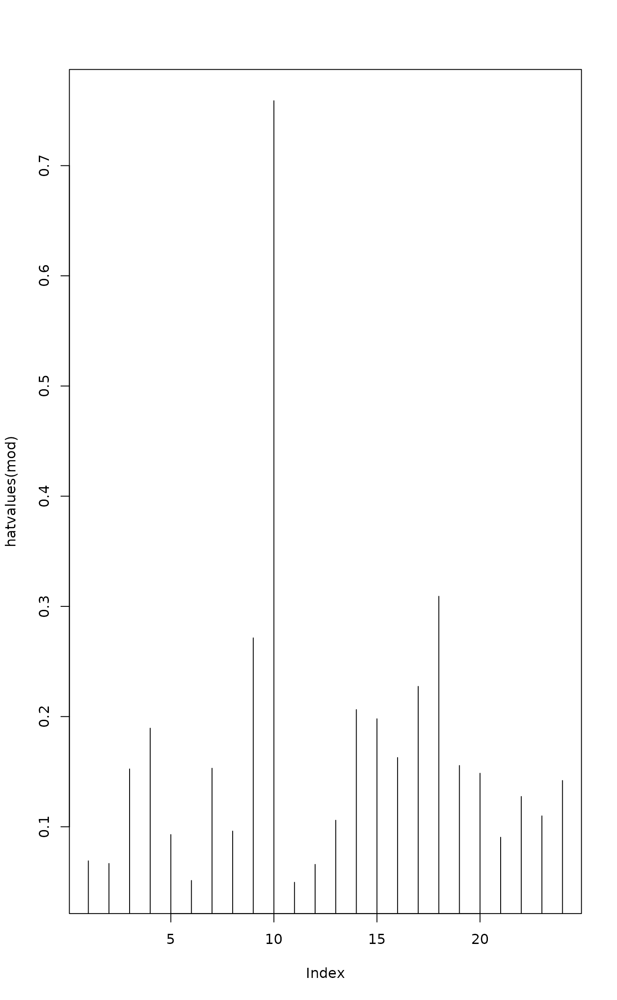
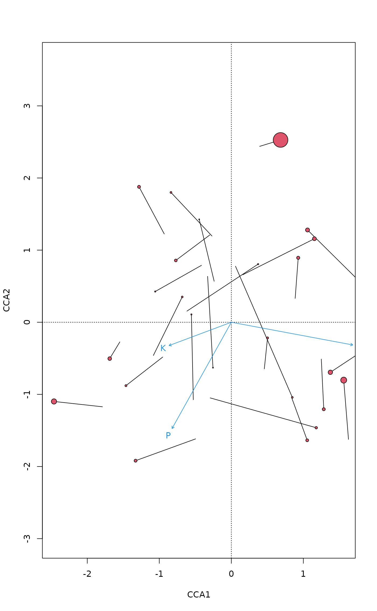

influence.cca.RdThis set of function extracts influence statistics and some other
linear model statistics directly from a constrained ordination result
object from cca, rda,
capscale or dbrda. The constraints are
linear model functions and these support functions return identical
results as the corresponding linear models (lm), and you
can use their documentation. The main functions for normal usage are
leverage values (hatvalues), standardized residuals
(rstandard), studentized or leave-one-out residuals
(rstudent), and Cook's distance
(cooks.distance). In addition, vcov
returns the variance-covariance matrix of coefficients, and its
diagonal values the variances of coefficients. Other functions are
mainly support functions for these, but they can be used directly.
# S3 method for cca hatvalues(model, ...) # S3 method for cca rstandard(model, type = c("response", "canoco"), ...) # S3 method for cca rstudent(model, type = c("response", "canoco"), ...) # S3 method for cca cooks.distance(model, type = c("response", "canoco"), ...) # S3 method for cca sigma(object, type = c("response", "canoco"), ...) # S3 method for cca vcov(object, type = "canoco", ...) # S3 method for cca SSD(object, type = "canoco", ...) # S3 method for cca qr(x, ...) # S3 method for cca df.residual(object, ...)
| model, object, x | A constrained ordination result object. |
|---|---|
| type | Type of statistics used for extracting raw residuals and
residual standard deviation ( |
| ... | Other arguments to functions (ignored). |
The vegan algorithm for constrained ordination uses linear model
(or weighted linear model in cca) to find the fitted
values of dependent community data, and constrained ordination is
based on this fitted response (Legendre & Legendre 2012). The
hatvalues give the leverage values of these constraints,
and the leverage is independent on the response data. Other influence
statistics (rstandard, rstudent,
cooks.distance) are based on leverage, and on the raw
residuals and residual standard deviation (sigma). With
type = "response" the raw residuals are given by the
unconstrained component of the constrained ordination, and influence
statistics are a matrix with dimensions no. of observations times
no. of species. For cca the statistics are the same as
obtained from the lm model using Chi-square standardized
species data (see decostand) as dependent variable, and
row sums of community data as weights, and for rda the
lm model uses non-modified community data and no
weights.
The algorithm in the CANOCO software constraints the results during
iteration by performing a linear regression of weighted averages (WA)
scores on constraints and taking the fitted values of this regression
as linear combination (LC) scores (ter Braak 1984). The WA scores are
directly found from species scores, but LC scores are linear
combinations of constraints in the regression. With type =
"canoco" the raw residuals are the differences of WA and LC scores,
and the residual standard deviation (sigma) is taken to
be the axis sum of squared WA scores minus one. These quantities have
no relationship to residual component of ordination, but they rather
are methodological artefacts of an algorithm that is not used in
vegan. The result is a matrix with dimensions no. of
observations times no. of constrained axes.
Function vcov returns the matrix of variances and
covariances of regression coefficients. The diagonal values of this
matrix are the variances, and their square roots give the standard
errors of regression coefficients. The function is based on
SSD that extracts the sum of squares and crossproducts
of residuals. The residuals are defined similarly as in influence
measures and with each type they have similar properties and
limitations, and define the dimensions of the result matrix.
Legendre, P. and Legendre, L. (2012) Numerical Ecology. 3rd English ed. Elsevier.
ter Braak, C.J.F. (1984--): CANOCO -- a FORTRAN program for canonical community ordination by [partial] [detrended] [canonical] correspondence analysis, principal components analysis and redundancy analysis. TNO Inst. of Applied Computer Sci., Stat. Dept. Wageningen, The Netherlands.
Function as.mlm casts an ordination object to a multiple
linear model of class "mlm" (see lm), and similar
statistics can be derived from that modified object as with this set
of functions. However, there are some problems in the R
implementation of the further analysis of multiple linear model
objects. When the results differ, the current set of functions is more
probable to be correct. The use of as.mlm objects should be
avoided.
Corresponding lm methods and
as.mlm.cca. Function ordiresids provides
lattice graphics for residuals.
#> 18 15 24 27 23 19 22 #> 0.06904416 0.06666628 0.15245083 0.18944882 0.09291510 0.05122338 0.15309307 #> 16 28 13 14 20 25 7 #> 0.09605909 0.27139695 0.75889765 0.04958141 0.06582891 0.10590183 0.20630888 #> 5 6 3 4 2 9 12 #> 0.19797654 0.16280522 0.22738889 0.30915530 0.15557066 0.14855598 0.09046701 #> 10 11 21 #> 0.12745850 0.10984996 0.14195559## ordination plot with leverages: points with high leverage have ## similar LC and WA scores plot(mod, type = "n")#> Callvulg Empenigr Rhodtome Vaccmyrt Vaccviti Pinusylv #> 18 0.4084518 0.9442480 -0.68178124 -0.798241724 0.9883838 -0.3086868 #> 15 -1.3902462 -1.5717947 -0.70784872 -0.645563228 0.2353736 -0.1679226 #> 24 0.9622453 -0.9520875 -0.08884556 -0.654099911 0.2420416 0.4832198 #> 27 -1.1080099 1.0938951 1.70146427 -0.196668562 -0.3937467 -0.7424140 #> 23 0.3979939 1.3218254 -0.63872221 -1.003315524 1.8996365 -0.4495408 #> 19 -1.5874575 0.7894087 -0.59609083 -0.006142973 0.1334143 -0.1060450 #> Descflex Betupube Vacculig Diphcomp Dicrsp Dicrfusc #> 18 -0.5785258 -0.4585683 0.7640788 4.3748349 -0.39301720 -0.656213958 #> 15 -0.5416812 -0.4594716 -0.3410155 -0.2704388 -0.05769657 0.406022095 #> 24 -0.6409619 0.1908003 0.0198320 -0.2175720 3.75416938 -0.009140093 #> 27 4.2976822 -0.2704153 0.9211453 -0.2037075 -0.84410200 -0.712968237 #> 23 -0.8356637 -0.2779318 -0.0206861 -0.2899895 -0.67773316 -0.294674408 #> 19 -0.4453843 -0.3739569 -0.3174207 -0.2429740 -0.14281646 -0.819230368 #> Dicrpoly Hylosple Pleuschr Polypili Polyjuni Polycomm #> 18 -0.4933634 -0.6030042 -1.3812122 -0.07430854 -0.5332731 -0.7140513 #> 15 -0.3630434 -0.4055353 1.9930791 0.02126658 -0.2274864 -0.6730241 #> 24 2.2312025 -1.3907968 0.5792314 -0.45358405 -0.4628096 -0.2153846 #> 27 -0.5715008 1.6310289 0.8124329 -0.34628172 -0.8630615 0.9423113 #> 23 -0.4684368 -1.1995321 -0.8241477 -0.04953929 0.7890327 -0.6774675 #> 19 -0.3186606 -0.3948224 0.6180114 0.05035990 0.8260214 2.3626483 #> Pohlnuta Ptilcili Barbhatc Cladarbu Cladrang Cladstel #> 18 0.2918311 -0.42027512 -0.40191333 1.5303054 0.85056948 -0.2218833 #> 15 -0.6168627 -0.47096984 -0.42715787 0.1758993 -0.45409579 -0.3739920 #> 24 1.9274063 0.09984384 0.21066100 0.1668363 -0.08508535 -1.2835676 #> 27 -1.5729552 -0.31944598 -0.09167396 -0.1864165 0.51080623 -0.1083797 #> 23 0.4875575 0.61798970 -0.18848086 0.5574309 0.28079468 -0.4026464 #> 19 -0.1141521 -0.25344373 -0.31179839 -0.2391669 -0.65577452 0.6584127 #> Cladunci Cladcocc Cladcorn Cladgrac Cladfimb Cladcris #> 18 -0.39796095 0.93836573 -0.2564543 0.33864378 1.1572584 -0.2083305 #> 15 0.06761526 0.24340663 -0.1767166 0.27491203 1.0721632 1.9724410 #> 24 1.24902375 -0.98471253 -0.4801382 2.51184311 -1.4063518 -0.3084304 #> 27 -0.59021669 -1.25354423 -0.2460447 -1.09351514 -1.1681499 -1.0337232 #> 23 -0.34604539 -0.10730202 3.9477300 2.51924664 0.3536280 3.3882402 #> 19 -0.33866721 0.02698153 0.1776632 0.03968833 -0.7512944 -0.4763562 #> Cladchlo Cladbotr Cladamau Cladsp Cetreric Cetrisla #> 18 -0.5711604 -0.4914716 4.0852019 0.2489284 -0.4428064 -0.5834462 #> 15 -0.4347061 -0.6517740 -0.3155708 -0.2568784 0.2369559 -0.3468005 #> 24 0.6013607 0.4603779 -0.1576900 -0.5995616 2.7826114 0.3931826 #> 27 -0.5436659 -0.2788962 -0.1606997 0.1557879 -0.7298364 -0.5867612 #> 23 0.1029999 0.6494142 -0.3415411 -0.2330698 -0.6309632 -0.5301977 #> 19 0.2793712 -0.1315438 -0.2705486 -0.2865837 -0.4664078 -0.5056846 #> Flavniva Nepharct Stersp Peltapht Icmaeric Cladcerv #> 18 0.30428187 -0.3624631 -0.23665431 -0.1571633 -0.630333375 0.12058739 #> 15 0.17345018 -0.1919943 0.05469573 -0.3233311 -0.561177494 0.08518455 #> 24 -0.74154401 -0.4146848 -0.05500461 -0.7609417 0.255058737 -0.92761801 #> 27 0.11301489 -0.5064006 -0.08681568 -0.1247151 -0.001277338 -0.04038189 #> 23 0.09411988 -0.4627811 0.47668055 3.5826478 -0.274664798 -0.05517988 #> 19 0.07211309 -0.1693122 -0.17244475 -0.3155345 -0.461532920 -0.02709075 #> Claddefo Cladphyl #> 18 -0.43581630 -0.2098378 #> 15 0.94176661 -0.1028102 #> 24 -0.07508682 -1.0479632 #> 27 -1.06110299 -0.4908554 #> 23 2.66430575 -0.4244333 #> 19 -0.08427954 -0.1692474#> Callvulg Empenigr Rhodtome Vaccmyrt Vaccviti Pinusylv #> 18 0.003093283 0.01653142 0.0086184263 1.181427e-02 0.0181129462 0.0017667454 #> 15 0.034513793 0.04411649 0.0089472619 7.441951e-03 0.0009892926 0.0005035324 #> 24 0.041636714 0.04076229 0.0003549575 1.923947e-02 0.0026344196 0.0105001237 #> 27 0.071736260 0.06992022 0.1691597848 2.260067e-03 0.0090591037 0.0322065174 #> 23 0.004056312 0.04474315 0.0104472601 2.577825e-02 0.0924100906 0.0051750754 #> 19 0.034013281 0.00841101 0.0047958896 5.093326e-07 0.0002402422 0.0001517834 #> Descflex Betupube Vacculig Diphcomp Dicrsp Dicrfusc #> 18 0.006205594 0.003898934 1.082466e-02 0.3548634058 2.863921e-03 7.984152e-03 #> 15 0.005239584 0.003769873 2.076622e-03 0.0013060122 5.944416e-05 2.943802e-03 #> 24 0.018474359 0.001637053 1.768633e-05 0.0021286828 6.337714e-01 3.756697e-06 #> 27 1.079245024 0.004272814 4.958014e-02 0.0024247421 4.163335e-02 2.970242e-02 #> 23 0.017883042 0.001978130 1.095811e-05 0.0021534900 1.176240e-02 2.223634e-03 #> 19 0.002677405 0.001887502 1.359924e-03 0.0007968265 2.752966e-04 9.058502e-03 #> Dicrpoly Hylosple Pleuschr Polypili Polyjuni Polycomm #> 18 0.004513066 0.006741841 0.035371924 1.023801e-04 0.0052727512 0.009453588 #> 15 0.002353565 0.002936747 0.070934636 8.076156e-06 0.0009241023 0.008088546 #> 24 0.223863289 0.086982577 0.015087217 9.251676e-03 0.0096318471 0.002086096 #> 27 0.019084693 0.155444288 0.038567940 7.006653e-03 0.0435246182 0.051884812 #> 23 0.005619275 0.036846999 0.017393559 6.284604e-05 0.0159429407 0.011753178 #> 19 0.001370570 0.002104010 0.005155103 3.423056e-05 0.0092093061 0.075342921 #> Pohlnuta Ptilcili Barbhatc Cladarbu Cladrang #> 18 0.0015790689 0.0032749544 0.0029950405 0.0434204290 0.0134139742 #> 15 0.0067949512 0.0039609143 0.0032582625 0.0005525065 0.0036821731 #> 24 0.1670519112 0.0004482780 0.0019955986 0.0012516596 0.0003255476 #> 27 0.1445719869 0.0059627459 0.0004910701 0.0020305802 0.0152462776 #> 23 0.0060873754 0.0097800450 0.0009097308 0.0079572035 0.0020190921 #> 19 0.0001758783 0.0008669766 0.0013121758 0.0007720518 0.0058043470 #> Cladstel Cladunci Cladcocc Cladcorn Cladgrac Cladfimb #> 18 0.0009128242 2.936424e-03 1.632609e-02 0.0012194323 2.126298e-03 0.024831249 #> 15 0.0024976637 8.163919e-05 1.057972e-03 0.0005576530 1.349574e-03 0.020527262 #> 24 0.0740870642 7.015301e-02 4.360375e-02 0.0103666250 2.837200e-01 0.088939118 #> 27 0.0006863532 2.035516e-02 9.181862e-02 0.0035373629 6.987166e-02 0.079734929 #> 23 0.0041517010 3.066511e-03 2.948453e-04 0.3990922140 1.625248e-01 0.003202372 #> 19 0.0058511426 1.548070e-03 9.826017e-06 0.0004260291 2.126033e-05 0.007618415 #> Cladcris Cladchlo Cladbotr Cladamau Cladsp Cetreric #> 18 0.0008047178 0.0060485887 0.0044785217 0.3094317912 0.001148912 0.003635513 #> 15 0.0694732020 0.0033744318 0.0075858327 0.0017782910 0.001178323 0.001002639 #> 24 0.0042777886 0.0162620357 0.0095308986 0.0011181833 0.016164882 0.348184969 #> 27 0.0624395810 0.0172709295 0.0045450274 0.0015089732 0.001418140 0.031124511 #> 23 0.2939860714 0.0002716767 0.0107999564 0.0029872002 0.001391075 0.010194981 #> 19 0.0030627243 0.0010534342 0.0002335528 0.0009879496 0.001108529 0.002936134 #> Cetrisla Flavniva Nepharct Stersp Peltapht Icmaeric #> 18 0.006311601 1.716683e-03 0.0024359336 1.038405e-03 0.0004579733 7.366793e-03 #> 15 0.002147676 5.372282e-04 0.0006582422 5.342149e-05 0.0018668272 5.623539e-03 #> 24 0.006951741 2.472742e-02 0.0077328775 1.360514e-04 0.0260380002 2.925400e-03 #> 27 0.020117510 7.463161e-04 0.0149844191 4.404005e-04 0.0009088445 9.533741e-08 #> 23 0.007198701 2.268512e-04 0.0054844061 5.818798e-03 0.3286900860 1.931899e-03 #> 19 0.003451467 7.018956e-05 0.0003869197 4.013694e-04 0.0013438101 2.875078e-03 #> Cladcerv Claddefo Cladphyl #> 18 2.696135e-04 3.521639e-03 0.0008164040 #> 15 1.295779e-04 1.583784e-02 0.0001887477 #> 24 3.869397e-02 2.535317e-04 0.0493852158 #> 27 9.528504e-05 6.579101e-02 0.0140785723 #> 23 7.797221e-05 1.817802e-01 0.0046131462 #> 19 9.905729e-06 9.587131e-05 0.0003866237## Influence measures from lm y <- decostand(varespec, "chi.square") # needed in cca y1 <- with(y, Cladstel) # take one species for lm lmod1 <- lm(y1 ~ Al + P + K, varechem, weights = rowSums(varespec)) ## numerically identical within 2e-15 range(cooks.distance(lmod1) - cooks.distance(mod)[, "Cladstel"])#> [1] -2.775558e-16 2.498002e-16#> CCA1 CCA2 CCA3 #> Al 0.007478556 -0.001883637 0.003380774 #> P -0.006491081 -0.102189737 -0.022306682 #> K -0.006755568 0.015343662 0.017067351#> CCA1 CCA2 CCA3 #> Al 6.5615451 -1.397643 3.313629 #> P -0.4576132 -6.092557 -1.756774 #> K -2.0862129 4.007159 5.887926